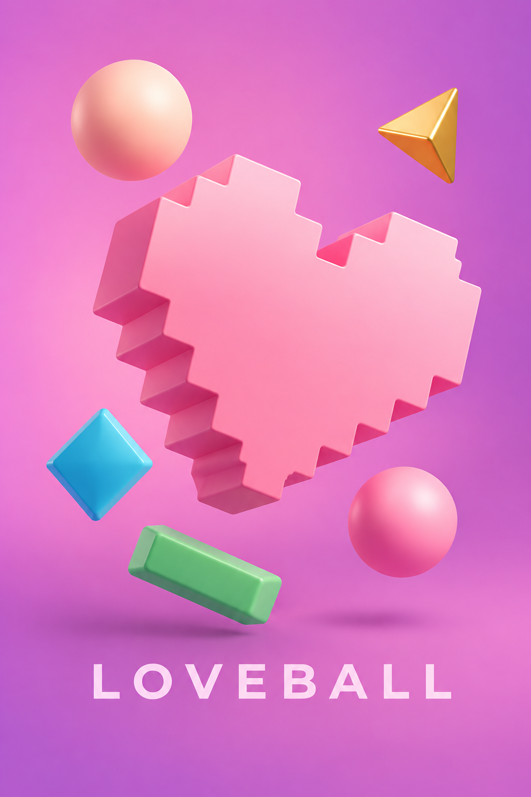

Loveball

- C++
- SFML
Sviluppo
Ho sviluppato un gioco arcade in C++ con SFML: movimento della palla e della piattaforma, collisioni, ostacoli, gestione delle vite e condizioni di vittoria e sconfitta.
Il mio percorso
Con Loveball ho iniziato a trasformare lo studio del C++ in qualcosa di concreto e giocabile. Sono partita dal movimento di una palla e di una piattaforma, aggiungendo gradualmente regole, ostacoli e dettagli visivi. La mia formazione artistica ha trovato spazio nei colori e nella pixel art; la programmazione mi ha insegnato a costruire il comportamento del gioco, una soluzione alla volta.